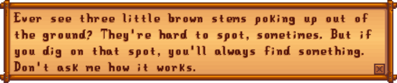

Artifact Spot
| Artifact Spot | |
 |
|
| How did you get this in your inventory? | |
| Information | |
| Season | |
- See also: Seed Spot
An Artifact Spot (also known as worms, stems, or twigs) is a tile that is guaranteed to provide an item when dug up with a Hoe (other tools do not work). Artifact Spots can be found in various tillable (but fallow) tiles on maps all over Stardew Valley (including Ginger Island). Up to 16 can also be created in a given area by using a Treasure Totem.
A variety of location-dependent items can be obtained from artifact spots; they are a key source for Artifacts and Lost Books. Artifact spots are much more common in Winter, when they can also yield Snow Yams and Winter Roots.
Contents
This page or section contains unmarked spoilers from update 1.6 of Stardew Valley. Players may want to avoid or be cautious toward reading this article/section. |
| Article Stub
This article is marked as a stub for the following reason:
|
The possible contents of an artifact spot are controlled by the map where it is located. The specific item found in any artifact spot is fixed for a given day, even if the game is reloaded.[1] However, a different item is possible the next day (assuming the artifact spot does not disappear overnight). Using a Hoe with the Archaeologist enchantment doubles the chance of finding an artifact.
The pool of potential items contained within artifact spots is checked against a list, in the order listed below. The chances to find items later in the list vary depending upon the details of which earlier items still remain possible.
- 20-32% chance of a Lost Book.[2] Not possible on the Farm. Note that once all Lost Books are found, any potential Lost Book is replaced by Mixed Seeds.
- Various Artifacts, dependent upon location. Note, however, that some artifacts can never be found in artifact spots (namely, Dwarf Scrolls, Dwarvish Helm, Dwarf Gadget, Rare Disc, and Skeletal Tail).
- In Winter only: 28-50% chance of a Winter Root or a Snow Yam (Winter Root is 50% more likely than Snow Yam in all locations). Not possible in the Desert.
- During Qi's Crop quest only: 25% chance of 2-5 Qi Beans.
- In Spring only: 3-6% chance of 1-5 Rice Shoots. Not possible in the Desert or Beach.
- 2-5 Bone Fragments, only after completing Gunther's Special Order "Fragments of the past" (20% chance)
- A location-dependent list of other items. Some artifacts can reappear in this second list, but most of the items are resources. The percentages provided are valid for summer and fall (values are generally 50% smaller in winter and 6% smaller in spring).
- 1-3 Copper Ore: Pelican Town (14%), Railroad (11%), Bus Stop (9%), Backwoods (7%), Cindersap Forest (5%), the Mountains (5%)
- 1-3 Coal: Backwoods (5%), the Mountains (4%), the Farm (4%)
- 1-3 Gold Ore: the Beach (4%)
- 1-3 Stone: possible anywhere (8-20% depending on location)
- 1-3 Clay: possible anywhere (24-60% depending on location)
- An unseen Secret Note: up to 5% chance, only if the player has a Magnifying Glass.[3]
- Starting Summer 1 of Year 1: 1 Warp Totem: Farm, Warp Totem: Mountains, or Warp Totem: Beach can replace Clay (10% chance)
- Each Artifact Spot can also spawn:
- A Golden Animal Cracker (0.8-1% chance depending on daily luck).[4]
- Either Bait And Bobber, Combat Quarterly, Mining Monthly, Stardew Valley Almanac, or Woodcutter's Weekly (0.54% chance overall, 0.11% chance to obtain each one).[4]
- A random cosmetic item (1.8% chance).[4]
On Ginger Island
Island North[5]
Island South[6]
Island West[7]
|
Anywhere[8]
|
Spawning
Overnight, artifact spots randomly spawn in exterior locations at a rate that is highly dependent upon the map.[9] Average spawn rates range from 0.1/day (Cindersap Forest, Bus Stop) to 1/day (Desert). Other than during Winter, artifact spots only appear in tillable soil, i.e., yellow/brown tiles that can be tilled with a Hoe. In Winter, the artifact spot spawn rate is higher and they can also appear in grass-type tiles (i.e., tiles that are colored green during non-winter months; this designation is not based on whether or not harvestable Grass is growing). Winter-time average spawn rates range from 0.4/day (Railroad) to 1.4/day (Desert).
Existing artifact spots left in an area overnight block new artifact spots from spawning, according to the following rules:
- Each area is processed independently; for example, an existing artifact spot on the beach has no effect on spawning of other areas (e.g., the Bus Stop, or Cindersap Forest).
- Spawning is blocked if there are two or more artifact spots already existing in the same area[10] (for the Farm, spawning is blocked if even one exists already).
- In Winter, for all locations, the limit is relaxed. Spawning is no longer blocked unless there are five or more already.
- Spawning is calculated after possible removal of any existing spots, so even when there is an artifact spot left overnight, there is some chance it may be removed and replaced with new spawns.
Artifact spots never spawn in hidden tiles behind buildings, bushes, non-removable trees, or other permanent features. However, they can spawn in difficult-to-see locations behind removable trees (ones the player can chop down). Artifact spots also never spawn in tiles where other objects are present (chests, trees, equipment, weeds, debris, etc.), or in any tilled soil (anywhere a crop is planted or could be planted). Thus, placing equipment or planting trees in tillable soil can reduce the chance of artifact spots spawning, but only if a large fraction of the tiles is occupied.
Removal
If the player does not dig up an artifact spot, it is likely to remain in place for multiple days. Normally, there is a 15% chance[11] of any artifact spot disappearing overnight.
Artifact spots do not get destroyed for reasons other than the player or random removal. For example, villagers and farm animals can walk through tiles containing artifact spots without damaging them or otherwise altering them.
Digging up an artifact spot also tills the soil. Off the farm, tilled artifact spots always revert to standard tillable soil overnight. On the farm, tilled soil typically remains in place until the end of the season. To immediately restore standard tillable soil an Axe or Pickaxe must be used on the tile.
Spawning & Removal Exceptions
Spawning and removal is accelerated on certain days. By default, the processing for the spawning and removal logic occurs one time each night, except:
- On the first day of the season, processing is repeated twice.[9] For most maps, this increases the chances of at least one artifact spot appearing, but for Cindersap Forest, the resulting spawn rate may be actually lower because the effective spawn rate is less than the removal rate of 15%.
- On Sunday, processing is repeated in triplicate.[9]
- On the Beach, between Summer 12-14, processing is run 6+ times.[12]
- All winter-time artifact spots that spawned on grass-type tiles are always removed at the end of the winter.
Notes
- The Tracker profession can make it easier to find artifact spots, by adding small yellow arrows pointing to any off-screen artifact spots.
- The Archaeologist enchantment doubles the likelihood of finding an artifact in an artifact spot.
- The Generous enchantment gives a 50% chance of a double item from an artifact spot.
Trivia
- Many players call them worms, but their internal name is Artifact Spot. An episode of Livin' Off The Land describes them as "little brown stems":

References
- ↑ The contents of an Artifact Spot are determined by GameLocation::digUpArtifactSpot, using data from ObjectInformation.xnb (for artifacts) and Locations.xnb (for extra items). The random number generator is seeded by the save game ID, the days played, and the location. Each item is checked sequentially to see whether a random number is less than the item's specified chance; the first item that succeeds is the one found. One result of this algorithm is that the actual chance of finding a given item is smaller than the value in the input file, because it can only be found if all previous artifacts failed their tests. Extra items are affected the most strongly, because they are checked last, and therefore they are less likely in winter (by 50%) and in spring (by 6.25%).
- ↑ All locations (other than the Farm) have a fixed 20% chance of spawning a lost book. Although GameLocation::digUpArtifactSpot does this check after scanning for artifacts from ObjectInformation.xnb, a Lost Book overrides any previously-found artifact and therefore is effectively given precedence. Most locations also have a secondary check for a Lost Book based on the data in Locations.xnb.
- ↑ Once the player has a Magnifying Glass, any Clay found in an artifact spot has a chance of being replaced by an unseen Secret Note. If the player has seen all possible secret notes, Clay is found. The chance of being replaced ranges from 1.3% to 9% depending upon how many notes have been seen, see GameLocation::tryToCreateUnseenSecretNote in the game code.
- ↑ 4.0 4.1 4.2 See Utility::trySpawnRareObject and GameLocation::digUpArtifactSpot in the game code.
- ↑ See IslandNorth::digUpArtifactSpot in the game code.
- ↑ See IslandSouth::digUpArtifactSpot in the game code.
- ↑ See IslandWest::digUpArtifactSpot in the game code.
- ↑ See IslandLocation::digUpArtifactSpot in the game code, and Data\Locations.xnb in the game files.
- ↑ 9.0 9.1 9.2 Artifact Spots are spawned and destroyed by GameLocation::spawnObjects. Note that GameLocation::dayUpdate can call GameLocation::spawnObjects multiple times on some days (three calls on Sunday; two calls on first day of the month; two calls on each of first three days of game). Therefore spawn rates and removal rates can be nearly three times faster on some days.
- ↑ See GameLocation::spawnObjects in the game code.
- ↑ The removal algorithm is fully random (it does not use a seeded random number generator), so which artifact spots disappear at the end of a day can change if the entire day is replayed.
- ↑ See Beach::DayUpdate in the game code.
History
- 1.4: Fixed bug causing dry tilled soil left by artifact spots on rainy days. Fixed bug preventing certain artifacts from appearing in artifact spots. Artifact spots on grass now removed at end of winter.
- 1.5: Archaeologist and Generous enchantments added. Warp Totems can now replace Clay.
- 1.6: Treasure Totem can now be used to force spawn artifact spots. Added Golden Animal Cracker, skill books, and cosmetic items to possible drops.